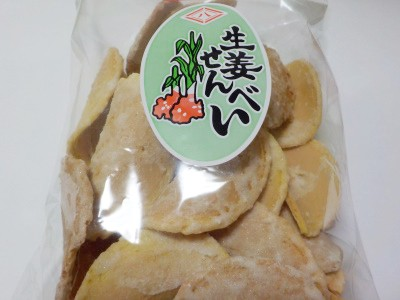
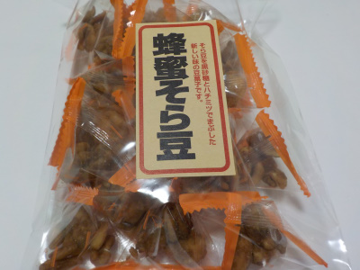

西八製菓の生姜せんべい。
2022/08/14

小麦粉のせんべいに砂糖と生姜が付いていますが、均一ではないので食べるたびに味が変わります。
せんべい自体が美味しいので、味が変わるのは飽きにくくていいと思いました。
島根県雲南市木次町山方621-1
2022/08/14

小麦粉のせんべいに砂糖と生姜が付いていますが、均一ではないので食べるたびに味が変わります。
せんべい自体が美味しいので、味が変わるのは飽きにくくていいと思いました。
2022/02/28
また食べたくなったので買いました。
最近はピーナッツや大豆のお菓子よりコレが好きかな。
2022/01/23

テトラパックに入ったそら豆のお菓子です。
揚げそら豆はカラが付いてて、食べる時に殻を外して食べたりしますが、これはカラがないのでそのまま簡単に食べれます。
豆と黒砂糖と蜂蜜なので甘納豆っぽいかなと思ったんですが、揚げたそら豆のカリカリ感と砂糖の甘さ、程よい塩分で美味しかったです。
常備しておくと便利そうなスナック菓子だと思いました。
西八製菓 豆菓子出雲駄菓子 蜂蜜そら豆 130g×5袋
楽天で購入